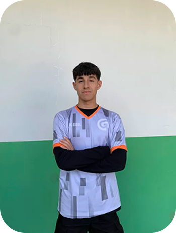

Equipe
-
Davi Ramos
Líder
-

Vilmar Michels
Programador Chefe
-

Vitor A. L.
Web Designer
-

Igor Decker
Influenciador/Programador
-

Victor Israel
Influenciador/Editor
-

Arthur L. Prodlik
Secretário

Layout
A criação das páginas teve grande inspiração no site da "Smart Fit", que é uma grande franquia de academias. Com base nisso, escolhi cores fortes para representar a intensidade que nossa academia transmite aos nossos alunos, utilizando como cores principais o vermelho e o branco, com uma base minimalista.

Nosso grupo teve vários debates para a criação de funcionalidades, sendo a principal delas o formulário — um espaço onde o usuário teria a capacidade de responder perguntas sobre sua saúde física e mental. A partir dessas respostas, seria criado um treino personalizado para essa pessoa.
Cores
As cores usadas foram:
-
ED1616
-

FFFFFF
-

100E0E
-

F24B4B
Atas do Projeto
-
Dia 10/07/2025 a 16/07/2025
Responsável pelos site retirados: Davi Augusto Ramos
Responsável pelos vídeos retirados: Vitor Avanzi Lipinski
Responsável pelos vídeos criados: Igor Gabriel Decker e Victor Israel Millnitz
*Responsável pela documentação: Arthur Luiz Prodlik
Cada um foi atrás dos materiais para utilização no site -
Dia 16/07/2025
Todos presentes na aula do dia 16/07/2025
Foi criado o documento com todas as referências de imagens e vídeos,além de informações coletadas para o site. Criamos o github do site e compartilhamos com a equipe toda. Tivemos a ideia de dois integrantes irem na academia e gravarem vídeos da execução certa dos exercícios para colocar no site. Ver referências... -
Dia 17/07/2025 a 13/08/2025
O integrante Vitor Avanzi fez o wireframe do site e o diagrama
Victor Israel e Igor Gabriel editaram os vídeos que posteriormente foram gravados na academia.
Victor Israel e Igor Gabriel criaram as redes sociais Instagram. Vilmar programou a 1 pagina em html css -
Dia 13/08/2025
*Todos presentes na aula do dia 13/08/2025
Decidimos o nome do projeto como Várzea Gym. Começamos a programação das páginas no html e css. -
Dia 23/08/2025
Sábado Letivo
Apenas o integrante vilmar não compareceu na aula de sábado.Continuamos o trabalho fazendo a programação e o design do site. Igor e Victor trouxeram algumas fotos e vídeos para utilizarmos como exemplos de exercícios na academia. Davi e Arthur fizeram algumas linhas de códigos e Vitor mexeu no design. Tivemos também a ideia de criar um quiz com algumas perguntas exemplo: Qual é seu objetivo na academia, você tem algum tipo de lesão, e geral um treino específico para o objetivo do usuário. -
Dia 13/08/2025 a 09/09/2025
Todos presentes na aula do dia 13/08/2025
Vilmar foi o principal programador, Igor e Davi auxiliaram na programação do site
Victor Israel e Igor Gabriel criaram os post para os perfis das redes sociais
Vitor Avanzi fez algumas alterações do design e o finalizou, cores principais do design foram vermelho preto e branco.
Arthur realizou a inscrição do projeto para a SEPE e o painel de integração
Victor e Igor Gabriel, foram a academia de novo e criaram mais vídeos para postar nas redes sociais -
Dia 10/09/2025 a 16/09/2025
As páginas iniciais do site foram programadas e iniciamos as próximas. Tivemos algumas alterações no submenu e menu além de conseguir mais vídeos dos treinos que serão integrados dentro do nosso site.
-
Dia 17/09/2025
Todos presentes na aula do dia 17/09/2025
Vilmar deu continuidade nas páginas de treino personalizado,saúde mental e algumas mudanças na página de início. Igor e Victor terminaram os vídeos que serão colocados no site e editaram. -
Dia 24/09/2025
As últimas páginas foram terminadas faltando apenas o “sobre nós” e os “planos”.Nosso trabalho foi aceito na submissão da SEPE. Tivemos mais algumas alterações nos sub menus e menus. O site agora está completo nos textos e com todos os vídeos e imagens no nosso site.
-
Dia 25/09/2025 a 30/09/2025
As páginas iniciais, treinos personalizados,sobre nós e as demais páginas foram finalizadas e agora estamos revendo o site para melhorar algumas coisas. Iremos mudar o tamanho dos textos e o tamanho da fonte além de mudar partes do visual do site.
-
Dia 01/10/2025 a 10/10/2025
Nesse dia realizamos ajustes gerais no nosso site para deixar ele mais bonito visualmente e padronizar cores e fontes. De tal forma que fique com informações mais diretas para os usuários. Finalizamos os menus e submenus da interface e conclusão da página Planos e o conteúdo da página Sobre o Projeto.Adicionada logo oficial ao site. Ajustes nas páginas de Treinos e no Header.
-
Dia 11/11/2025 a 20/11/2025
Padronizamos os textos informativos do site de uma forma que ficassem mais alinhados e conexos com o nosso objetivo.Ajustes nas duas primeiras páginas, e na tipografia do site,tiramos algumas fontes que achamos desnecessárias.Removemos a opção “quantidade de dias” do formulário devido a falta de impacto funcional. Iniciamos a responsividade da página inicial e revimos o formulário e modificamos adicionando novas perguntas e iniciando um novo script.
-
Dia 22/10/2025 a 25/11/2025
Fizemos a atualização da navegação do site. Finalizamos a estrutura do formulário principal criando e aplicando a responsividade nela. Corrigimos os links quebrados nas páginas.Melhorias de responsividade e ajustes gerais nas páginas principais. Aplicados novos ajustes visuais e melhorias no layout. Implementada responsividade na página de alimentação, garantindo melhor adaptação em dispositivos móveis.Publicados vídeos editados, adicionados às páginas correspondentes. Ajustada responsividade da página de lesões físicas.
-
Dia 26/11/2025 a 30/11/2025
Arthur resolveu os erros gramaticais do site, fez alguns ajustes visuais e terminou a documentação do site. Igor fez a responsividade da página Planos e Vitor arrumou a logo do site.
-
Dia 01/12/2025
Davi adicionou as fontes na aba sobre projeto, e Vilmar corrigiu erros de validador e alguns erros ortograficos também.
Fontes
- SABIN. Entenda a relação entre atividade física e saúde mental. Blog Sabin, [s.d.]. Disponível em: https://blog-sabin-com-br.cdn.ampproject.org/v/s/blog.sabin.com.br. Acesso em: 16 jul. 2025.
- UNIMED CAMPINAS. Entenda a importância da atividade física para a saúde mental. Blog Unimed Campinas, [s.d.]. Disponível em: https://www.unimedcampinas.com.br/blog/saude-emocional/entenda-a-importancia-da-atividade-fisica-para-a-saude-mental/. Acesso em: 16 jul. 2025.
- HATFIELD, D. L.; HAFER, J. L. Strength and hypertrophy adaptations between low- and high-load resistance training. Journal of Strength and Conditioning Research, v. 31, n. 12, p. 3509-3517, dez. 2017. Disponível em: https://journals.lww.com/nsca-jscr/fulltext/2017/12000/strength_and_hypertrophy_adaptations_between_low_.31.aspx. Acesso em: 18 set. 2025.
- Esse é o Melhor Treino Que Ninguém faz | Full Body. YouTube, 2025. Disponível em: https://youtu.be/pRxyQXL1eVA. Acesso em: 18 set. 2025.
- SANTOS, Vanessa Sardinha dos. Alimentação saudável. Brasil Escola. Disponível em: https://brasilescola.uol.com.br/saude-na-escola/alimentacao-saudavel.htm. Acesso em: 28 nov. 2025.
- LEAL, Karla; et al. Alimentação saudável: o que é, benefícios e como fazer (com dicas). Tua Saúde, 2025. Disponível em: https://www.tuasaude.com/alimentacao-e-saude/. Acesso em: 28 nov. 2025.